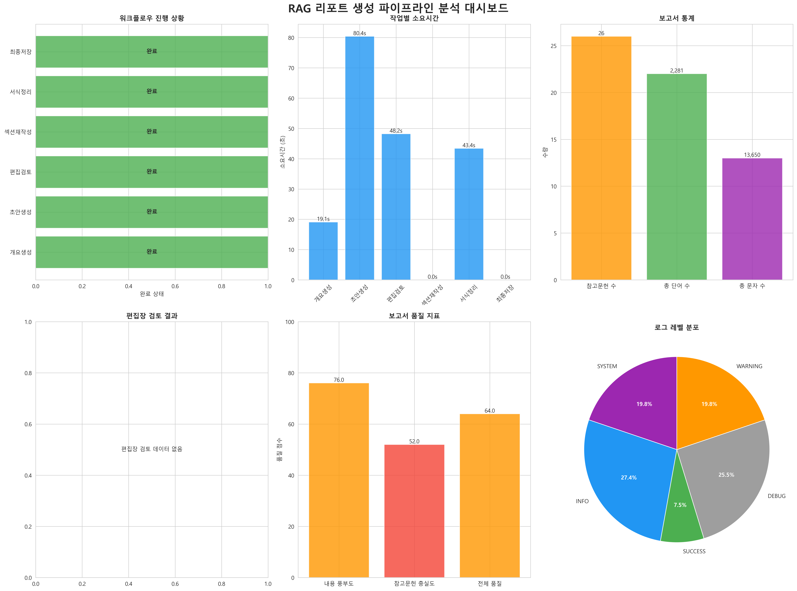

프로젝트 소개
RAG Writer v4는 복잡하고 전문적인 법률 연구 보고서 생성 과정을 완전히 자동화하는 지능형 시스템입니다. RAG(Retrieval-Augmented Generation) 기법과 LangGraph의 에이전트 워크플로우를 결합하여, 사용자는 간단한 GUI를 통해 주제와 실행 모드만 선택하면 됩니다. 시스템은 스스로 초안 작성부터 편집장 수준의 검토, 자동 수정, 최종 서식 정리, 그리고 시각적 분석 대시보드 생성까지의 모든 과정을 자율적으로 수행하여, 전문가 수준의 보고서를 신속하게 완성합니다.
핵심 기능
🖥️ 사용자 친화적 GUI
Tkinter로 제작된 간단한 인터페이스를 통해 보고서 주제 입력 및 생성 모드(Production/Test)를 쉽게 선택할 수 있습니다.
🧠 지능형 워크플로우
LangGraph 기반의 자가 교정(self-correcting) 루프를 구현, AI가 스스로 초안의 문제점을 분석하고 재작성하여 완성도를 높입니다.
📊 자동 분석 대시보드
파이프라인의 모든 과정을 시각화합니다. 작업별 소요시간, 품질 지표, 참고문헌 통계 등을 포함한 종합 대시보드를 생성합니다.
🗂️ 체계적인 결과물 관리
모든 생성물(보고서, 로그, 시각화 자료)을 타임스탬프 기반 폴더에 체계적으로 저장하여 이력 관리가 용이합니다.
⚙️ 동적 모델 선택
GUI에서 고품질(Pro) 모드와 비용 효율적(Flash) 모드를 선택하여 목적에 맞는 AI 모델을 유연하게 활용할 수 있습니다.
📚 FAISS 기반 벡터 DB
수만 건의 법률 문서 청크를 FAISS 벡터 DB에 저장하여, 보고서 내용과 가장 관련성 높은 참고자료를 실시간으로 검색 및 활용합니다.
데이터 파이프라인
1단계: 데이터 준비 및 벡터 DB 구축
보고서 생성의 첫 단계는 고품질의 지식 기반을 구축하는 것입니다. 이 과정은 다음과 같이 진행됩니다.
- 심층 리서치 자료 수집: Gemini, Genspark 등 다양한 AI 도구를 활용하여 '사내변호사 ACP'와 관련된 논문, 기사, 법률 문서 등 심층 리서치 자료를 수집하고
/sources폴더에 저장합니다. - 데이터 전처리 (
Data_Processor.py): 수집된 원본 마크다운(.md) 파일들을 파싱하여 문장 단위로 분할하고, 각 문장에 연결된 목차 정보와 참고문헌 번호를 추출합니다. 동시에 각 문장에 고유 ID(UUID)를 부여하고, 참고문헌 텍스트를 연결하여_processed.json파일을 생성합니다. - 벡터 DB 생성 (
Vector_DB_Creator.py): 전처리된_processed.json파일의 모든 문장들을 Google의text-embedding-004모델을 통해 고차원 벡터로 변환합니다. 이 벡터들은 FAISS 라이브러리를 통해 인덱싱되어, 빠른 유사도 검색이 가능한vector_db.faiss파일로 저장됩니다. 문장과 ID 등 메타데이터는vector_db_data.json에 저장됩니다.
2단계: 지능형 보고서 생성 (LangGraph 워크플로우)
강력한 벡터 DB가 준비되면, LangGraph로 설계된 에이전트 워크플로우가 보고서 생성을 시작합니다.
개요 생성
사용자 주제와 벡터 DB의 핵심 정보를 분석하여 논리적인 보고서 목차를 생성합니다.
초안 작성
목차의 각 섹션에 대해, 벡터 DB에서 관련 내용을 검색하여 상세한 초안을 작성합니다.
편집장 검토 (AI Self-Correction)
AI 편집장이 초안의 논리적 비약, 내용 부실 등을 검토합니다. 기준 미달 시, 개선 지침을 생성하여 재작성을 요청합니다.
섹션 재작성
편집장의 개선 지침에 따라 문제가 된 섹션의 본문을 다시 생성하고, 통과할 때까지 재검토를 받습니다. (최대 3회)
최종화 및 저장
모든 검토를 통과한 보고서의 서식을 정리하고, 참고문헌을 처리한 후, 보고서, 로그, 시각화 자료를 폴더에 저장합니다.
결과물 예시
GUI 스크린샷
사용자는 아래와 같은 간단한 GUI로 프로그램을 시작할 수 있습니다. 주제를 입력하고 모드를 선택한 뒤 버튼을 클릭하면 모든 프로세스가 자동으로 진행됩니다.

자동 생성 대시보드
작업이 완료되면, 파이프라인의 성과를 한눈에 파악할 수 있는 종합 분석 대시보드가 자동으로 생성됩니다. 이를 통해 프로세스의 투명성을 확보하고 품질을 객관적으로 평가할 수 있습니다.
결과물 파일 예시
실제 생성된 최종 보고서와 편집장 검토 로그를 직접 확인해 보세요.
기술 스택
시작하기
프로젝트를 로컬 환경에서 실행하는 방법입니다.
1. 소스 코드 복제
git clone [repository_url]
cd Rag-writer2. 필수 라이브러리 설치
스크립트가 자동으로 설치를 시도하지만, 수동으로 설치할 수도 있습니다.
pip install -r requirements.txt # (requirements.txt 파일이 있다면)
# 또는
pip install google-generativeai python-dotenv faiss-cpu numpy scikit-learn langgraph matplotlib seaborn pandas Pillow3. 환경 변수 설정
.env 파일을 만들고 Gemini API 키를 입력하세요.
GEMINI_API_KEY="YOUR_GEMINI_API_KEY"4. 애플리케이션 실행
python generate_report_v3.py